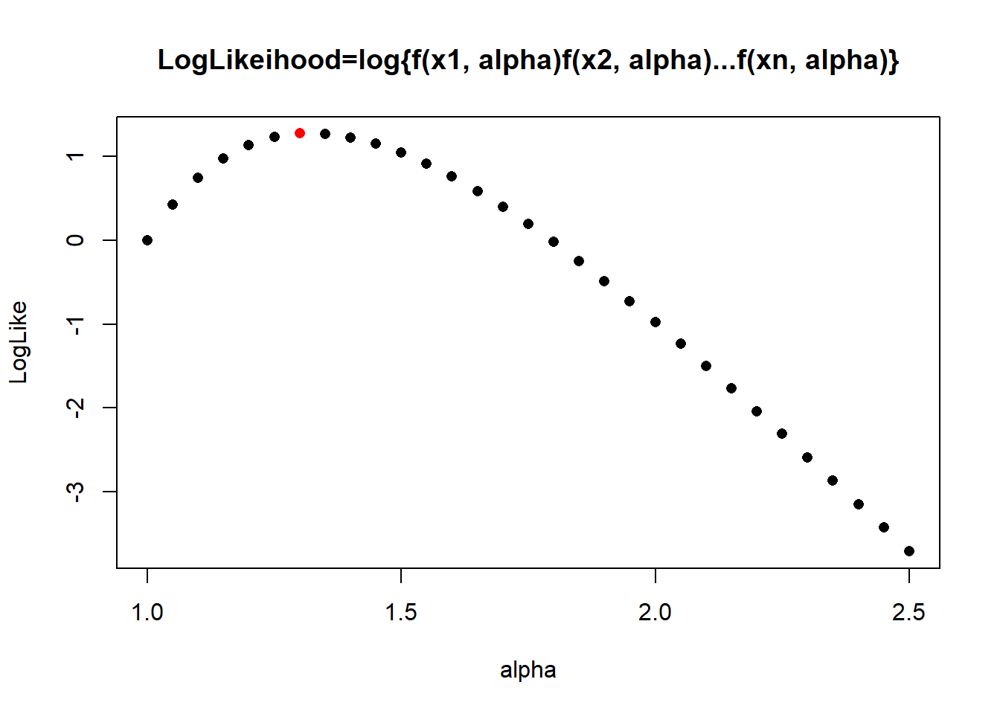
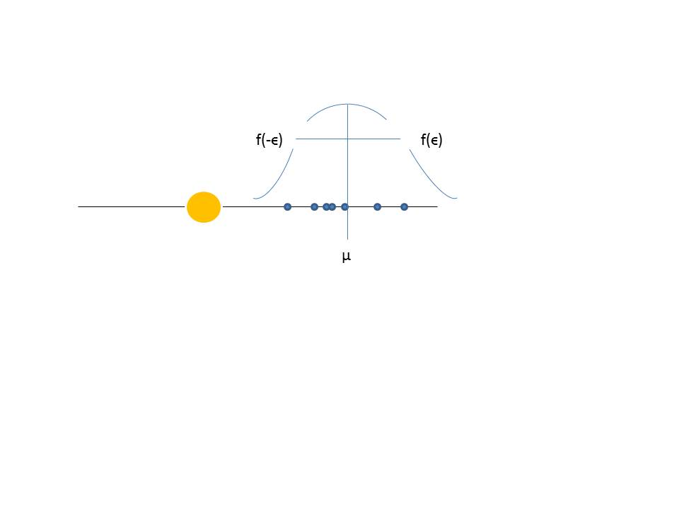

Chapter 12 Máxima verosimilitud
12.2 Estadística
Definición
Dada una muestra aleatoria \(X_1,...X_n\), una estadística es cualquier función de valor real de las variables aleatorias que definen la muestra aleatoria: \(f(X_1,...X_n)\)
- \(\bar{X}=\frac{1}{N} \sum_{j=1..N} X_j\)
- \(S^2=\frac{1}{n-1}\sum_{i=1}^n (X_i-\bar{X})^2\)
- \(\max{X_1, X_n}\)
son estadísticas
12.3 Estimador
Definición
Un estimador es un estadístico \(\Theta\) cuyos valores \(\hat{\theta}\) son medidas de un parámetro \(\theta\) de la distribución poblacional sobre la que se define la muestra: \(E(\Theta)\sim \theta\)
\(X \hookrightarrow f(x; \theta)\)
Entonces
- \(\theta\) es un parámetro de la distribución de la población \(f(x; \theta)\)
- \(\Theta\) es un estimador de \(\theta\): Una variable aleatoria
- \(\hat{\theta}\) es la estimación de \(\theta\): Un valor realizado de \(\Theta\)
12.5 Ejemplos 1: promedio (media de la muestra)
Cuando \(X \hookrightarrow N(\mu, \sigma^2)\)
Para la media:
- \(\mu\) es un parámetro de la distribución poblacional \(N(\mu, \sigma^2)\)
- \(\bar{X}\) es un estimador de \(\mu\)
- \(\bar{x}=\hat{\mu}=13.21 \, Tons\) es el estimado de \(\mu\)
12.6 Ejemplos 2: Variación de la muestra
Cuando \(X \hookrightarrow N(\mu, \sigma^2)\)
Para la varianza:
- \(\sigma^2\) es un parámetro de la distribución de la población \(N(\mu, \sigma^2)\)
- \(S^2\) es un estimador de \(\sigma^2\)
- \(s^2=\hat{\sigma^2}=0.127 \, Tons^2\) es la estimación de \(\sigma^2\)
12.7 Sesgo
Un estimador es insesgado (no tiene sesgo) si \(E(\Theta)=\theta\)
\(\bar{X}\) es un estimador insesgado de \(\mu\) porque \(E(\bar{X})=\mu\)
\(S^2\) es un estimador insesgado de \(\sigma^2\) porque \(E(S^2)=\sigma^2\)
12.8 Consistencia
Un estimador es consistente si \(V(\Theta) \rightarrow 0\) cuando \(n \rightarrow \infty\)
\(\bar{X}\) es consistente porque \(V(\bar{X})=\frac{\sigma}{n}\rightarrow 0\) cuando \(n \rightarrow \infty\).
\(S^2\) también es coherente (no lo mostraremos).
12.9 Máxima verosimilitud
¿Cómo podemos estimar el parámetro de cualquier modelo paramétrico?
Imaginemos que diseñamos un láser con un diámetro de 1 mm que queremos usar para aplicaciones clínicas.
Queremos caracterizar el diámetro de un agujero en un tejido realizado con el láser
y tomar una muestra aleatoria de 30 cortes realizados con el láser
## [1] 1.11 1.64 1.20 1.79 1.89 1.01 1.31 1.81 1.34 1.25 1.92 1.24 1.49 1.36 1.03
## [16] 1.82 1.09 1.01 1.14 1.91 1.80 1.51 1.44 1.98 1.46 1.53 1.33 1.39 1.12 1.0412.11 Densidad de probabilidad
Consideramos que
- se debe dar la máxima probabilidad a los diámetros de \(x=1mm\)
- los diámetros deben disminuir exponencialmente en probabilidad a medida que aumentan de tamaño con un límite de \(2mm\) más allá del cual la probabilidad es de \(0\).
Una distribución de densidad de probabilidad adecuada es
\[ f(x)= \begin{cases} \frac{1}{\alpha}(x-1)^{\frac{1-\alpha}{\alpha}},& \text{if } x \in (1,2)\\ 0,& x \notin (1,2)\\ \end{cases} \]
Donde \(\alpha\) es un parámetro.
12.12 Densidad de probabilidad

Si realizáramos una muestra de \(n\): \(X_1,...X_n\)
- La máxima verosimilitud es un método que nos da el estimador para \(\alpha\)
\[\hat{\alpha}_{ml}\]
¿Cómo debemos combinar los datos para obtener el mejor valor de \(\hat{\alpha}_{ml}\)?
12.14 Máxima verosimilitud
El objetivo es encontrar el valor del parámetro que creemos que puede representar mejor los datos.
Buscamos el parámetro que hace más probable la observación de la muestra.
Recordemos que:
- Las probabilidades se asignan a las observaciones.
- Las probabilidades no se asignan a parámetros (asignamos creencias, probabilidades).
Se supone que los parámetros no deben cambiar, son propiedades del sistema.
12.15 Método paso 1
- Calculamos la probabilidad de haber observado la muestra \(n\): \(x_1,...x_n\)
\(P(x_1,...x_n)=P(X=x_1)P(X=x_2)...P(X=x_n)\) \[=f(x_1;\alpha)f(x_2;\alpha) ...f(x_n;\alpha)\]
- Una vez observados los datos se fijan.
- La incógnita es \(\alpha\)
- Esta probabilidad como función de \(\alpha\) la llamamos función de verosimilitud
\[L(\alpha)= \Pi_{i=1..n} f(x_i; \alpha)\]
entonces en nuestro caso
\(L(\alpha;x_1,..x_n)= \frac{1}{\alpha^n} \Pi_{i=1..n} (x_i-1)^{\frac{1-\alpha}{ \alpha}}= \frac{1}{\alpha^n} \{(x_1-1)(x_2-1)...(x_n-1)\}^{\frac{1-\alpha}{\ alpha}}\)
12.16 Método paso 2
Queremos maximizar \(L(\alpha)\) con respecto a \(\alpha\).
Como tenemos la multiplicación de muchos factores es más fácil maximizar el logaritmo de \(L(\alpha)\)
- Tomemos el logaritmo para obetener el Logaritmo de la verosimilitud
\[\ln L(\alpha;x_1,..x_n)= -n \ln(\alpha) + {\frac{1-\alpha}{\alpha}} \Sigma_{i=1...n} \ln (x_i-1)\]
12.17 Método paso 3
- Maximizamos el log de la verosimilitud con respecto al parámetro
Por lo tanto,
- diferenciamos con respecto a \(\alpha\)
\(\frac{d \ln L(\alpha)}{d \alpha}= -\frac{n}{\alpha} - \frac{1}{\alpha^2} \Sigma_{i=1... n} \ln (x_i)\)
- El máximo es donde la derivada es \(0\). Este máximo es el valor de nuestro estimador \(\hat{\alpha}_{ml}\).
\(\hat{\alpha}_{ml}=-\frac{1}{n}\Sigma_{i=1...n} \ln (x_i-1)\)
12.18 Método paso 3
\(\hat{\alpha}_{ml}=-\frac{1}{n}\Sigma_{i=1...n} \ln (x_i-1)\)
es la estadística que estima el parámetro.
En nuestro ejemplo calculamos:
\(\hat{\alpha}_{ml}=-\frac{1}{n}\{ \ln (1.11-1)+ \ln (1.64-1)+...\ln (1.04-1)\}=1.320\)
12.20 Estimacion
Este es el log de la verosimilitud de nuestros 30 cortes con láser.
Si tomamos otra muestra esta función cambia y también su máximo.

12.21 Distribución normal
Imaginemos que tomamos una muestra de \(8\) cables para estimar la carga de rotura de cables y
supongamos que \[X \rightarrow N(\mu, \sigma^2)\].
¿Cuáles son los estimadores de \(\mu\) y \(\sigma^2\) de la muestra?

¿Qué valores de los parámetros describen mejor los datos?
12.22 Distribución normal
- La función de verosimilitud, la probabilidad de haber observado \((x_1, ....x_n)\) es
\(L(\mu, \sigma^2)=\Pi_{i=1..n} N(x_i;\mu,\sigma)\)
\(=\big( \frac{1}{\sigma \sqrt{2 \pi}}\big)^n e^{-\frac{1}{2\sigma^2} \sum_i(x_i-\mu)^ 2}\)
- Podemos tomar el logaritmo de \(L\) y calcular la el log de la verosimilitud
\(\ln L(\mu, \sigma^2)=-n \ln(\sigma \sqrt{2 \pi})-\frac{1}{2\sigma^2} \Sigma_i(x_i-\mu) ^2\)
12.23 Distribución normal
Las estimaciones de \(\mu\), \(\sigma^2\) son donde la probabilidad es máxima y dan la máxima probabilidad a para los datos.
- diferenciamos con respecto a \(\mu\) y \(\sigma^2\) (tratándola como una variable por ejemplo \(t=\sigma^2\))
\(\frac{d \ln L(\mu, \sigma^2)}{d\mu}=\frac{1}{\sigma^2} \sum_i(x_i-\mu)\)
\(\frac{d \ln L(\mu, \sigma^2)}{d\sigma^2}=-\frac{n}{2 \sigma^2}+\frac{1}{2\sigma ^4} \sum_i(x_i-\mu)^2\)
12.24 Distribución normal
Derivando e igualando a \(0\) encontramos los máximos
- \(\frac{1}{\hat{\sigma}^2} \sum_i(x_i-\hat{\mu})=0\)
- \(-\frac{n}{2 \hat{\sigma}^2}+\frac{1}{2\hat{\sigma}^4} \sum_i(x_i-\hat{\mu})^2 =0\)
resolviendo los parámetros encontramos
- \(\hat{\mu}_{ml}=\frac{1}{n}\sum_i x_i=\bar{x}\) (el promedio)
- \(\hat{\sigma^2}_{ml}=\frac{1}{n}\sum_i(x_i-\bar{x})^2\) (la varianza de la muestra sin corregir)
El estimador de máxima verosimilitud de \(\sigma^2\) es un estimador sesgado como: \(E(\hat{\sigma}^2_{ml})\neq \sigma^2\)
12.25 Máxima verosimilitud: Historia
¿Cuál es la estadística que mejor representa la verdadera posición de Ceres?

12.26 Máxima verosimilitud: Historia
Gauss propuso que en un momento dado
- la posición verdadera de Ceres era la media \(\mu\)
- las probabilidades alrededor de la media eran simétricas.

12.27 Máxima verosimilitud: Historia
Gauss descubrió que si el promedio (\(\bar{x}\)) es el valor más verosimil para la posición real de Ceres (\(\mu\)), entonces la densidad de probabilidad de los errores es
\[\frac{h}{\sqrt{\pi}}e^{-h^2(y-\mu_Y)^2}\]
a la que llamamos la Gaussiana y que Pearson (1920) la bautizó como la curva normal.
Nota: Suponemos que la posición verdadera de Ceres existe y es \(\mu\).
- ¿Podemos decir lo mismo para altura de los hombres \(\mu\)? (Galton)
12.28 Método de los Momentos
El método de máxima verosimilitud tiene como objetivo producir los estimadores de distribuciones de probabilidad a partir de datos.
- ¿Hay otra forma de producir esos estimadores? ¿serán iguales?
12.29 Método de los Momentos
Reescribamos la estimación \(\hat{\mu}=\bar{x}\) para una variable normal en términos de los resultados de \(X\)
Por ejemplo:
\[\hat{\mu}=\frac{1}{n}\sum_i x_i= \sum_x x \frac{n_x}{n}\]
y recordemos que en el límite \(n \rightarrow \infty\) la interpretación frecuentista requiere \(\frac{n_x}{n} \rightarrow P(X=x)\) y por lo tanto en el límite
\[\hat{\mu}=\frac{1}{n}\sum_i x_i \rightarrow E(X)=\mu\]
12.30 Método de los Momentos
El método de los momentos dice que podemos tomar el valor observado del promedio \(\bar{X}\) como estimador de \(E(X)=\mu\)
\[E(X) \sim\bar{x}\]
\(\bar{X}=\frac{1}{N}\sum_i X_i\) se llama el primer momento muestral
Si \(X \rightarrow f(x, \theta)\), el estimador del parámetro \(\theta\) se obtiene entonces de la ecuación:
\[E(X)=\bar{x}\]
para el valor de \(\hat{\theta}\) observado
Ejemplo: Si
\(X \hookrightarrow exp(\lambda)\) entonces
Calculamos el valor esperado \(E(X)=\frac{1}{\lambda}\)
Formulamos la ecuación donde igualamos el valor esperado al primer momento muestral \(\frac{1}{\hat{\lambda}}=\bar{x}=\frac{1}{n}\sum_i x_i\)
Resolvemos para el parámetro \[\hat{\lambda}=\frac{1}{\bar{x}}\]
12.31 Método de los Momentos
Supongamos que tenemos varias baterías (nuevas y viejas) que cargamos durante el período de 1 hora. Medimos el estado de carga de la batería siendo 1 a 100% de carga.
El estado de carga de una batería es una variable aleatoria que puede tener una distribución uniforme, donde no sabemos el valor mínimo que puede tomar \(x\), pero sabemos que el máximo es 1 (\(100\%\) de carga)
\[ f(x)= \begin{cases} \frac{1}{1-a},& \text{if } x\in (a,1)\\ 0,& x\notin (a,1) \end{cases} \]
¿Cuál es el estimador de \(a\) (la carga mínima al cabo de una hora)?
- Realizamos un experimento y obtenemos \(x_1,...x_n\) ¿cómo podemos estimar \(a\) a partir de los datos?
12.32 Método de los Momentos
- Calculamos el valor esperado de la variable aleatoria
\[E(X)=\frac{a+1}{2}\]
- Formulamos la ecuación para el parámetro \(\hat{a}\) igualando el valor esperado al primer momento muestral
\[\frac{\hat{a}+1}{2}=\bar{x}\]
- resolvemos para \(\hat{a}\)
\[\hat{a}=2\bar{x}-1\]
Este es el estimador de la carga mínima que podemos observar.
12.33 Método de los Momentos
Ten en cuenta que tomar el mínimo de las medidas es claramente subóptimo.
El método nos dio una respuesta inteligente:
- podemos calcular \(\bar{x}\) con precisión creciente dada por \(n\)
- Sabemos que ninguna medida supera \(b=1\)
- Luego calcula la distancia entre \(\bar{x}\) y \(b\): \(1-\bar{x}\)
- Restarlo de \(\bar{x}\): \(\bar{x}-(1-\bar{x})=2\bar{x}-1\)
12.34 Método de los Momentos
El método dice que se puede encontrar una estimación para el parámetro \(\theta\) de \(f(x;\theta)\) a partir de la ecuación:
\[E(X)=\frac{1}{n}\sum_i x_i\] para \(\hat{\theta}\).
Si hay más parámetros, usamos los momentos muestrales más altos
- El segundo momento muestral es
\[E(X^2)=\frac{1}{n}\sum_i X^2_i\]
Una observación de este momento es
\(\frac{1}{n}\sum_i x^2_i\).
El método dice que se puede encontrar una estimación para los parámetros \(\theta_1\) y \(\theta_2\) de \(f(x;\theta_1,\theta_2)\) a partir de las ecuaciones:
\(E(X)= \frac{1}{n}\sum_i x_i\)
\(E(X^2)=\frac{1}{n}\sum_i x^2_i\)
Para \(\hat{\theta}_1\) y \(\hat{\theta}_2\)
Podemos entonces incrementar el número de ecuaciones tanto como parametros queramos estimar.
12.35 Distribución normal
Si \(X\) se distribuye normalmente tenemos dos parámetros a estimar \[X \rightarrow N(\mu, \sigma^2)\]
- Calculamos la media y el valor esperado del segundo momento \(E(X^2)\):
\(E(X)=\mu\) y \(E(X^2)=\sigma^2-\mu^2\)
- Obtenemos las ecuaciones para los parámetros donde hacemos que el valor esperado sea igual al primer momento de la muestra, y el segundo momento sea igual al valor esperado del segundo momento
- \(\hat{\mu}=\frac{1}{n}\sum_i x_i\)
- \(\hat{\sigma}^2-\hat{\mu}^2=\frac{1}{n}\sum_i x^2_i\)
12.36 Distribución normal
- Resolvemos los parámetros
La primera ecuación nos da el estimador de la media \(\mu\).
- \(\hat{\mu}=\frac{1}{n}\sum_i x_i\)
De la segunda ecuación obtenemos
- \(\hat{\sigma}^2= \frac{1}{n} \sum_i x^2_i-\hat{\mu}^2\)
que también se puede escribir como: \[\hat{\sigma}^2=\frac{1}{n} \sum_i(x_i-\hat{\mu})^2\] ___________ ___________
12.37 Método de los Momentos
¿Cuál es el estimador del parámetro \(\alpha\) para el corte láser dado por el método de los momentos?
\[ f(x; \alpha)= \begin{cases} \frac{1}{\alpha}(x-1)^{\frac{1-\alpha}{\alpha}},& \text{if } x \in (1,2)\\ 0,& x \notin (1,2)\\ \end{cases} \]
Donde \(\alpha\) es un parámetro.
12.38 Método de los Momentos
El método dice que se puede encontrar una estimación para el parámetro \(\alpha\) de \(f(x;\alpha)\) a partir de la ecuación:
\[E(X)=\frac{1}{n}\sum_i x_i\] para \(\hat{\alpha}\)
- Calculamos el valor esperado \(E(X)\)
\[E(X)=\int_{-\infty}^{\infty} x f(x;\alpha)dx\]
12.39 Método de los Momentos
Consideremos un cambio de variables \(Z=X-1\) entonces \(E(X)=E(Z)+1\) y
\(E(Z)= \frac{1}{\alpha} \int_0^1 z z^{\frac{1-\alpha}{\alpha}}dz= \frac{1}{\alpha} \int_0^1 z^{1+\frac{1-\alpha}{\alpha}}dz\)
\(= \frac{1}{\alpha} \frac{z^{2+\frac{1-\alpha}{\alpha}}}{{2+\frac{1-\alpha}{\alpha}} } |_0^1=\frac{1}{1+\alpha}\)
Por lo tanto,
\[E(X)=E(Z+1)=\frac{1}{1+\alpha}+1\] 2. Formulamos la ecuación para el parámetro \(\hat{\alpha}\) igualando el valor esperado al primer momento muestral
\[\frac{1}{1+\hat{\alpha}}+1=\bar{x}\]
- resolvemos para \(\hat{\alpha}\)
\[\hat{\alpha}_m=\frac{1}{\bar{x}-1}-1\]
- Calculamos el valor para nuestros datos
\(\hat{\alpha}_m=1.314\)
12.40 Método de los Momentos
Ten en cuenta que este es un ejemplo para el cual las estimaciones por máxima verosimilitud y el método de momentos son diferentes
\(\hat{\alpha}_{ml}=-\frac{1}{n}\sum_{i=1}^n \ln (x_i-1)=1.320\)
\(\hat{\alpha}_m=\hat{\alpha}_m=\frac{1}{\bar{x}-1}-1=1.314\)
Necesitamos estudios de simulación, donde sepamos el verdadero valor del parámetro \(\alpha\), para encontrar cuál de estas estadísticas tiene menos error cuadrático medio.
Nota: los datos de 30 perforaciones con láser se simularon con \(\alpha=2\), por lo que debemos preferir la estimación de máxima verosimilitud.
Para obtener mejores estimaciones de \(\alpha\) necesitamos aumentar el tamaño de la muestra.